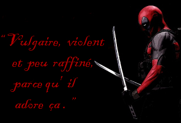
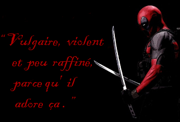

Gina Carano
Gina Joy Carano, fille du quaterback de l'équipe de football américain des Cowboys de Dallas Glenn Thomas Carano, est rapidement plongée dans le milieu du sport de haut niveau. Sa pratique des arts martiaux débute par le Muay Thaï, et elle devient par la suite, en 19 victoires (pour seulement 2 défaites), l'une des meilleures combattantes de la catégorie des Arts Martiaux Mixtes. En plus de toutes ces activités, elle parvient à obtenir un diplôme de psychologie.
Après une première apparition à la télévision dans un programme de télé-réalité en 2006, Gina signe l'année suivante sa première véritable incursion dans le monde du cinéma avec Blood and Bone. Ce film sur des combats clandestins la fait côtoyer le massif Michael Jai White, et goûter à l'expérience d'un véritable tournage.
Sa carrière cinématographique lancée, Gina Carano rejoint la distribution musclée de Fast & Furious 6 en se livrant à un combat impressionnant avec Michelle Rodriguez dans les sous-sols du métro, puis goûte à l'univers des super héros Marvel via Deadpool campé par Ryan Reynolds.